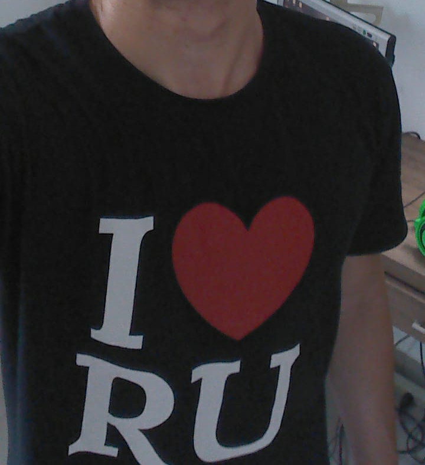

Reconhecimento facial em tempo real aplicado no RU
Acesse o repositórioBreve resumo
sobre Cyber Gate
Um projeto da matéria sistemas embarcados/Desenvolvimento de Software. Tem como objetivo fazer um protótipo de um sistema de reconhecimento facial tem tempo real para ser usado como acesso do restaurante universitário.
Desenvolvido por João Vitor Rodrigues Baptista 15/0013329
